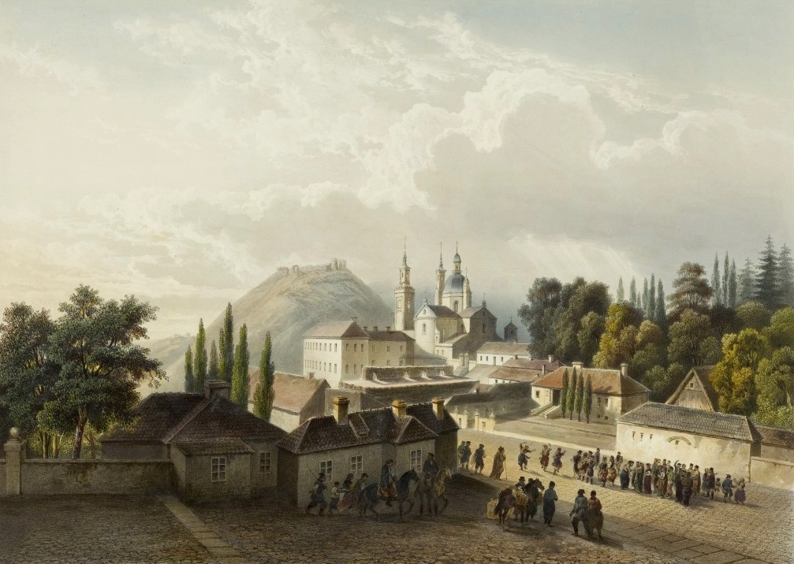
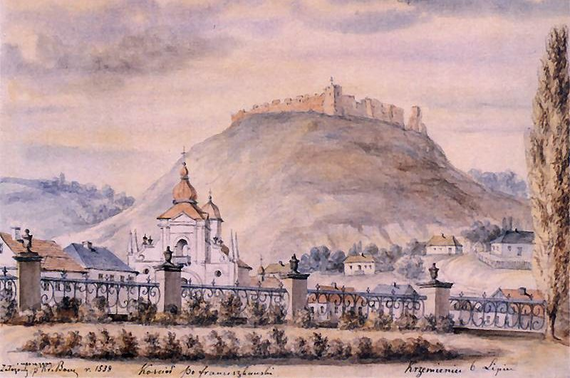
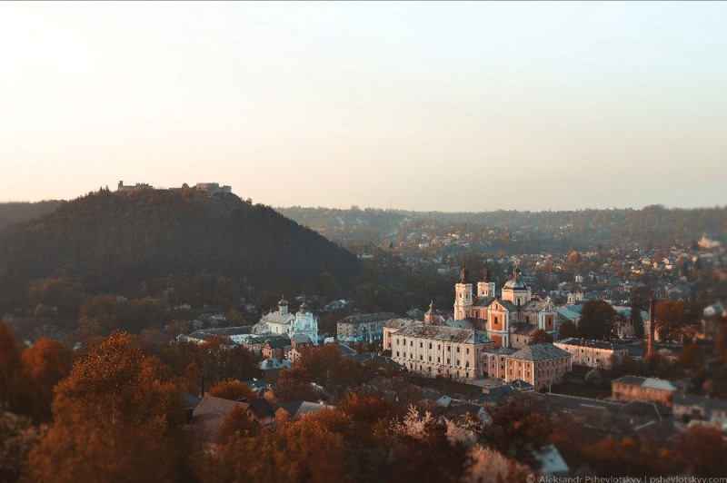
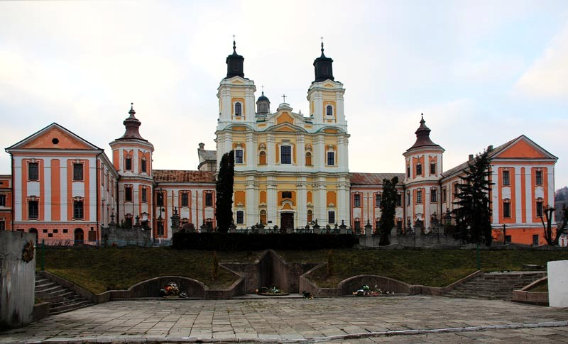
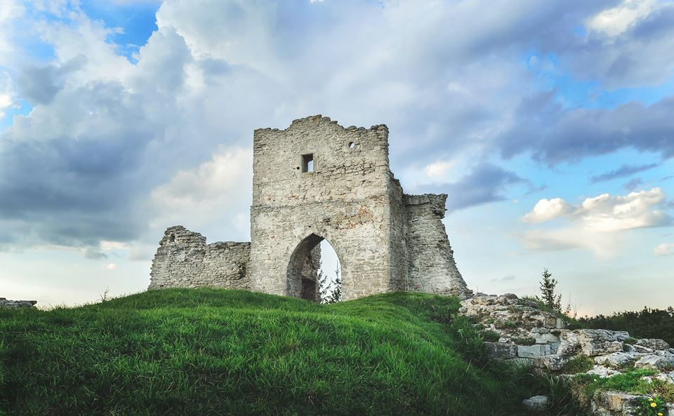
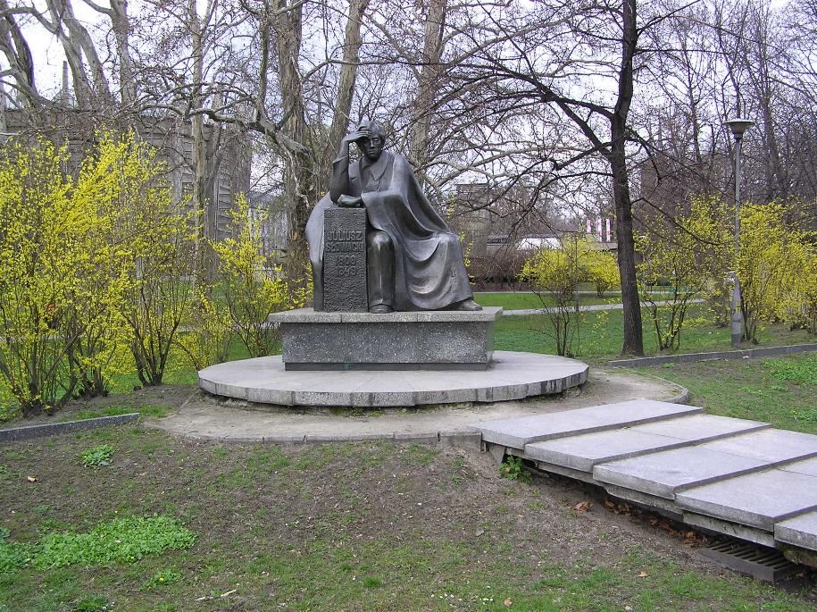
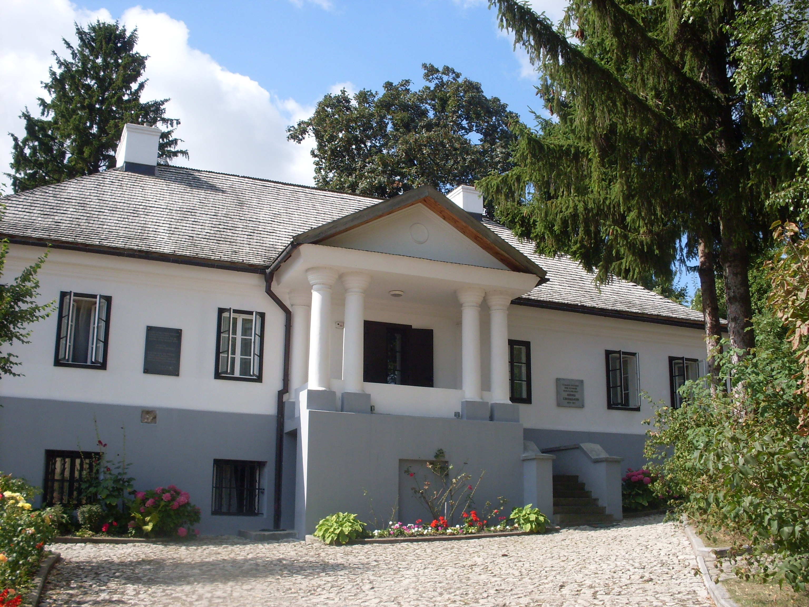
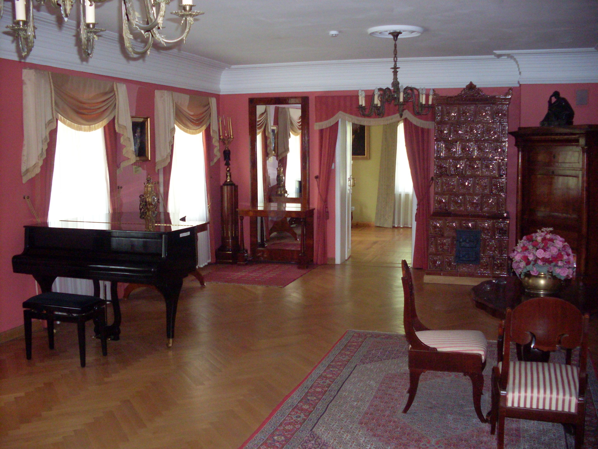
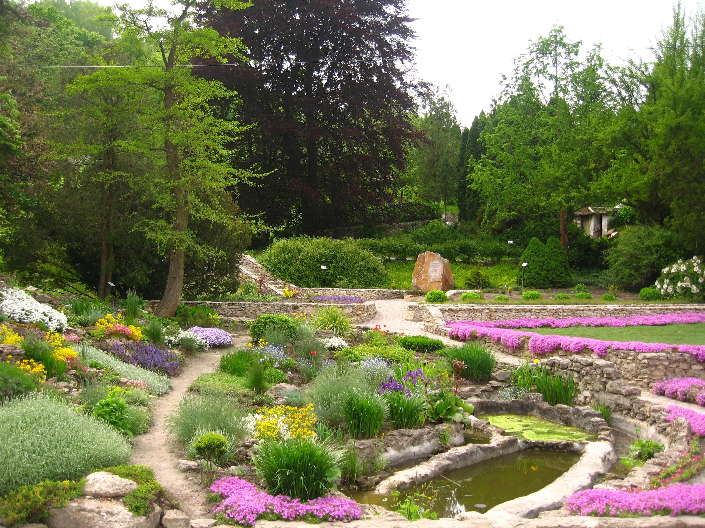

Ю́ліуш Слова́цький
великий польський поет і драматург, один із трьох національних поетів-пророків польської літератури поряд із Адамом Міцкевичем і Зиґмунтом Красінським.

Життя і творчість Юліуша Словацького
Юліуш Словацький, син Евзебіуша і Саломеї з Янушевських, народився в Кременці на Волині 4 вересня 1809 року. Його батько був поетом, перекладачем, істориком і теоретиком літератури; з 1806 року — професор поезії вимови Кременецького ліцею, заснованого Тадеушем Чацьким, у 1811 році очолює кафедру літератури Віленського університету. Залишає так звані „волинські Афіни", щоби розпочати працю у славетній академії, заснованій Стефаном Баторієм. До Вільна виїжджає з дворічним сином і дружиною Саломеєю, вразливою, сентиментальною дамою, в майбутньому — адресаткою великої кореспонденції Юліуша Словацького до матері, бо ця епістолярна творчість поета тривала аж двадцять років. Дитинство Юліуш проводив у Кременці й Вільні, де закінчив ліцей і вчився на факультеті моральних і політичних наук (право) Віленського університету. 29 жовтня 1814 року помер батько поета Евзебіуш. Цього ж року пізньої осені Саломея повертається із сином до Кременця, де чотири роки живе з ним у будиночку дідуся й бабусі Юліуша — Янушевських, тобто її родичів. У серпні 1818 року Саломея вдруге виходить заміж. Повернувшись до Вільна, одружується з Августом Бекю, професором гігієни Віленського університету. Молодий поет живе в домі, де бували Антоній Едвард Одинець, Адам Міцкевич, Йоахім Лелевель, брати Снядецькі. Такі зустрічі вплинули на обдарованого юнака і стали причиною написання перших віршів. Тоді ж єднає його юнацьке почуття з дочкою Єнджея Снядецького Людвікою. Пізніше це кохання знайде своє відображення в ліричних віршах.

Крім матері, Юльком опікувалися й обдаровували його чулою доброзичливістю дочки вітчима, Олександра і Герсилія. Виростаючи в такій емоційній та інтелектуальній атмосфері, молодий Словацький не переймається глибоко подіями, зв'язаними з процесом протестів філоматів і філаретів. У серпні 1824 року від блискавки гине вітчим поета. Тепер найчастіше Юліуш буватиме на канікулах у Кременці й на Поділлі. На початку 1829 року виїжджає до Варшави, щоб розпочати працю стажиста-юриста в Урядовій комісії прибутків і державних скарбів. Тоді знайомиться з Юліаном Урсином Немцевичем — патріархом польської літератури, і Юзефом Богданом Залеським — головним поетом т. зв. української школи.

Юнацька лірика Словацького виростає з сентиментальних традицій, так як пізніше лірика листопадового повстання — з класицистичних. Натомість ранні поетичні повісті Шанфари (1828), Ян Білецький (1830), Араб (1830), Монах (скоріш усього, в „Меlіtеlе", 1830) позначені вже романтичною поетикою, інспірованою Вальтером Скоттом, Джорджем Байроном і Міцкевичем.

Словацький стає бардом листопадового повстання, особливо здобуваючи визнання за гімн Богородиця, що багаторазово передруковується. У 1831 році поет
залишає Варшаву і через Вроцлав відправляється до Дрездена, звідки за дорученням Національного Уряду виїжджає до Лондона, який дуже впливає на уяву поета, сильніше, ніж Париж, куди незабаром Словацький приїде. У 1832 році він видає в Парижі два томики Поезій з юнацькими поетичними повістями, третій — наступного року, де вміщує повстанські вірші.
У 1832 році поет відправляється до Женеви, щоби втекти від неслави, в яку ввів Міцкевич вітчима Словацького, дуже виразно зображаючи його в III частині Дзядів запроданцем, якого спіткала Божа кар: він гине від блискавки.

Словацький — найбільш романтичний, якщо так можна сказати, з великих польських романтиків, молодший майже на одне літературне покоління від Міцкевича й Антонія Мальчевського, тому мусів визначити власне місце на тогочасній поетичній карті, передовсім з огляду на Міцкевича, над створенням пророцького міфу якого працювали поети й критики, які його оточували (И. Б. Залеський, Станіслав Ропелевський, видавець Євстахій Янушкевич).
У женевському періоді, крім лірики, створеної під враженням від альпійських пейзажів, повстає романтична ідилія В Швейцарії, в якій криється любов до Марії Водзінської. Із Женеви Словацький вирушає до Риму, де зав'язується глибша приязнь із Зигмунтом Красінським, який стане не тільки вразливим читачем його поезії, але й здійснить пізніше критичний розбір творів поета в порівнянні з Міцкевичем.
Дещо раніше (1836-1837) Словацький реалізує — так як це належить романтикові — свою екзотичну подорож з Неаполя до святої землі, яка обіймає захоплюючу трасу через Грецію, Олександрію, Єгипет, Палестину, Дамаск і Бейрут, щоби повернутися до Італії і довше залишитися у Флоренції. Безпосереднім плодом екзотичної пілігримки є написана секстинами поема Подорож до святої землі з Неаполя, восьма пісня якої — славнозвісна Гробниця Агамемнона, видана 1840 року разом з Ліллою Венедою. До Парижа поет повертається в 1838 році, де перебуватиме аж до смерті, виїжджаючи з нього тільки під час „весни народів" у Познанське воєводство і до Вроцлава, щоб зустрітися з матір'ю, яка завжди була найдорожчою особою на світі для Словацького. Його опорою і натхненням. Саме їй, чарівній жінці з поетичним ім’ям Саломея, завдячуватиме щоразу нове покоління відданих прихильників епістолярної лірики, яка була розміщена у книзі на 600
сторінок, що справедливо вважається взірцем саме такого літературного жанру.

Кременець завжди був нероздільно пов’язаний із образом матері для Словацького. То була головна печаль, яку поет проніс через усе життя…
Перелом у творчості Юліуша Словацького відбувся завдяки зустрічі з Анджеєм Тов'янським у липні 1842 року. Саме тоді в „Dzienniku Narodowym" (№ 70) поет друкує програмний вірш Допоможи мені, Боже! Однак наступного року він вийшов з гуртка тов'янців, відштовхнутий „тиранством духу" і проросійською налаштованістю. В останньому періоді життя Словацький продовжує Беньовського, творить численні фрагменти, пов'язані з працею над Королем Духом. Повстає один великий містичний твір, що цілком вийшов лиш у так званому кляйнерівському виданні в Оссолінеум.
Юліуш Словацький помирає 3 квітня 1849 року. Свідком його смерті був молодий приятель, пізніше архібіскуп варшавський Зигмунт Щенсний Фелінський, який читає йому останнього листа від матері. Поета хоронять у великодній четвер на паризькому цвинтарі Монтмартр. Пам’ятного 1927 року відбулось перевезення на Вавель праху Юліуша Словацького, «бо дорівнював королям».

Творчий доробок Юліуша Словацького
Мати до сина.
Сину! Йдеш ти в життя, в тi далекi дороги,
Де тебе берегти я не матиму змоги.
Нас лишивши, в чужому блукатимеш краї,
Де незнанi серця i незнанi звичаї.
Hинi ясно тобі зірка щастя жарiє,
На твоєму шляху сяють квiти надii.
Та як прийде кiнець юним думам i рокам,
Як опинися ти в чужинi одиноким,
Як опинися ти серед люду чужого,
Що кого не спитаєш - не скаже нiчого,-
Oтодi хоч у мрiях назад повертайся
До своєї Pодини i серцем втiшайся.
Ти згадай нашу хату, i поле, i трави,
I братiв, i сестер, i дитячi забави.
Ти згадай свого батька, що дивиться з неба,
Iз високого Божого храму на тебе!
А хiба не згадаєш ти матерi муки,
Що зазнала вона у години розлуки?
Сину! Благословляю! Надiйся на Бога!
Будь здоров! Ой, тяжка у життi нам дорога!..
Йди, мiй сину, з добром, тiльки слiд пам’ятати,
Що чеснота твоя – краща матерi плата!
Не може недоля мене пригнобити...
Не може недоля мене пригнобити,
Я маю дорогу второвану й гожу;
Дорога ця: жити - страждати - творити,
І так я роблю, більш зробити не можу.
Кохання колишнього світлі години,
Посвітачі в сяйві зірниць заяснілі;
Тепер же значніші є справи в людини,
Великі й печальні, мов сонце на схилі.
Годинник життя наставляють ці справи
І дух, наче жайвір, з них в просторінь пряне.
Дай поміч ти жайвору, боже мій правий,-
Хай весело злине, хай високо стане.
Я краще скажу: як життя пригасає,
Угору душа, наче ластівка, мчиться.
Дай поміч тій пташці, що в світло безкрає
Втопила свої звеселілі очиці.
Дайте землі мені смужку єдину...
Дайте землі мені смужку єдину,-
Чи забагато, брати мої милі?
Дайте хоч брилу, і постать людини,
Вільної духом, поставте на брилі,-
Зараз же я покажу вам увіч,
Що в тої постаті - двоє облич.
Дайте-но зірку мені найяснішу,
Сяйвом злотистим сповиту комету,-
Хай пролітає над пущами в тишу,
Ставши для Польщі за смертну прикмету,-
Зразу ж зберу свою міць потайну,
Крила розкину - і зірки сягну.
Браття! Коли я хилюся в молитві,
Молячись богу за люд, за вітчизну,-
Начебто чую, як кличуть у битву
Рицарі, ворога гонячи грізно.
Бути отам. Путь по зорях знайду.
Зорі ж глузливо питають - де йду?
Зорі холодні, світів чортовиння!
Ваша невіра мене забиває...
Ходжу і так я, вже повен шаління,
Всюди говорю, що край наш палає,
Кидаю скрізь, мов свідоцтво, вогні,-
Ні, то лиш серце палає в мені!..
“Година роздумів” (уривок).
Славне, рідне місто дзвіницями стриміє
З долини, вкритої блакитним небом ясним.
Чарівне, з мли нічної оком полиск сіє,
Хизується на сонці стін білявим пасмом,
Смарагдами садів, як перлами, прошите.
Узимку ллється з криги місиво розмите,
Впадає у круті зигзаги вулиць з гамом.
Гора стоїть там: Бона хрещена по йменню,
Вища від інших – місту, слугуючи тінню;
Старий, похмурий замок, котрий час затримав,
Приймає різні кшталти, ламаний хмар виром,
Удень бійниць блакитних дивиться очима,
Вночі, немов корона з траурним покривом,
Частенько зморшки віку відсуває кволі
На срібнім місяця обличчі. Небом ходить
В долині млистій, де уздовж – стрімкі тополі.
Нехай бліде дитя в думках прийдешнім марить,
Нехай у мріях з квіту запахом буяє,
Нехай чуттям прихованих світів шукає ...
Стокротки
Мило пелюстки у квітів зривати,
Любо кохані мовлять перекази,
Мило було і при людях сказати,
Що ми кохаємось, мовить сто-рази.
Мило під липовим стати намітом,
Квітоньки держачи так набоженно,
Мовить на-взаєм — обіравним цвітом:
«Любить»…і милая любить «страшенно»…
Часом сварилися любо, як діти
(А помириться все хтось заважає!);
Ти пам’ятаєш, як білії квіти —
Той мовив «ні», а той мовив — «кохає»…
Ось же тепер, без надії, самотній,
В скелях блукаючи,— смутним та лишнім, —
Вглядів стокротку я, духом турботний, —
Мов-би сестриця була тим колишнім…
Рвав я пелюсточки, — думка гадала…
Зберега в озері білий цвіт гинув…
Знаєш, — в останнє, що квітка сказала?
Любиш, кохана, мене «до загину»!..
В пам’яткову книжку Зосі
На що моїх віршів, дівчино, бажаєш?
Адже ти у нашу отчизну рушаєш!
Там вірші почуєш від кожної квітки,
Там пісню почуєш від кожної зірки!
Їх слухай, як сяють, як в повному цвіті, —
Вони-ж бо поети найкращії в світі!
Ті зорі блакитні, ті квітоньки милі
Хороші поеми складуть тобі цілі.
І я лиш те саме здолав би сказати,
Бо в їх научився і я промовляти:
• Де котяться Ікви сріблястії хвилі, —
Там жив я, в ті роки дитячії, милі!..
Далеко тепер я по світі блукаю,
І де мене доленька спинить, — не знаю;
Гляди-ж, привези мені зорь тих сіяння,
Гляди-ж, привези моїх квітів дихання!
Бо вже одживитися знов мені треба…
Вернися-ж, дівчино, — мов з самого неба!
Уривок з незакінченої поеми „Король Дух”
Якщо ти будеш у моїй країні,
Де котить Іква хвилі свої сині,
Де гори пнуться у блакить високу,
Де дзвонить місто над сріблом потоку,
Де квітчані конваліями луки
Біжать по схилах до міського бруку…”
Якщо там будеш, душе моя мила,
Хоч з променя повернена до тіла, –
Мою журбу ти спом’янеш в тім краї.
Вона, мов ангел золотий, ширяє,
А часом лине, як орел крилатий,
І знов сіда на скелях спочивати
Легке повітря, мов цілющу воду,
Там лив з грудей я рідному народу
Мій заповіт
Я з вами жив, страждав і плакав з вами,
Хто благородний - рідним був мені;
Тепер вас кидаю, рошу сльозами
Свої останні нещасливі дні.
Мого тут спадкоємця не лишиться
По лірі, ні по імені моїм.
Ім'я моє пройшло, як блискавиця,
І в майбутті розтане, ніби дим.
Оповісте ви тільки, друзі милі,
Що я вітчизні молодість віддав,
Був корабель в бою - я при вітрилі,
Пішов на дно - і я з ним потопав.
Лиш заклинаю - берегти надії,
Нести народу сяєво знання,
А як на смерть іти — хай не жаліє
Із вас ніхто свого ясного дня.
Інші роботи Словацького
Поезія
• Ангел вогнистий —
• Беатрікс Ченчі
• В альбом Софії Бобрової
• Гімн (Богородице! Діво!)
• Гімн заходу сонця на морі (Боже, смутно мені!)
• До матері
• Дума про Вацлава Жевуського
• Заспокоєння
• Мій заповіт («Жив з вами…»)
• На перенесення останків Наполеона
• Невідомо що або романтичність
• Ода до свободи
• Поможи мені, Боже!
• Розлука
• Розмова з пірамідами
Поетичні повісті
• Гуго (1830)
• Араб (1830)
• Ян Білецький (1830)
• Змій (1832)
• Лямбро (1833)
Драми
• Марія Стюарт (1830)
• Кордіан (1834)
• Балладина (1839)
• Мазепа (1839)
• Лілля Венеда (1840)
• Срібний сон Саломеї (1835)
• Горштинський (1835)
• Беатрикс Ченчі (1839-40)
• Крак (незакінчена, 1840)
• Валленрод (незакінчена, 1840)
• Беньовський (незакінчена, 1840)
• Фантазій (1841)
• Золотий череп (1842)
• Незламний князь (вільний переклад однойменної драми П. Калдерона-де-ла-Барки)(1843)
• Самуель Зборовський (1844–1845)
• Завіша Чарний (незакінчена,1844–1845)
Поеми
• Шанфарій (1832)
• Година роздумів (1832-33)
• Подорож до Святої Землі з Неаполя (незакінчена, 1836—1837, 1839)
• Вацлав (1838)
• Ксьондз Марек (1843)
• Ангеллі (1838)
• Батько зачумлених (1839)
• У Швейцарії (1839)
• Беньовський (1841)
• Генезис із Духа (1844)
• Король Дух (незакінчена; 1845–1849)

Відгуки критиків про Словацького та його творчість
„Я так далеко і не можу, як колись прилетіти до Кременця, вночі відкрити вашу фіртку, збудити дідуня, протягом хвилини удавати злодія, який вривається в дім, а вранці бути зустрінутим маминими слізьми. Щоб я дав за таку хвилину!.." – пише Словацький у листі до матері Саломеї
„Снилось мені недавно, що ходжу з тобою по гаю Черчі, що пахне мені конвалія. Що бачу полум`я цегелень і чую солов`їв... Серце летить до тебе. Прошу, читай Євангеліє і єднайся зі мною молитвою".
„Кохана мамо!.. Чи з твоїх вікон завжди видно Замкову гору - оцю гору, до якої я не раз пристосовував думку Сенкевича, що „вона переслідує людей, як сумління".
"...Дивно мені, моя мамо, що я бачив стільки міст світу, в моїй пам'яті і флорентійські вулиці, швейцарські краєвиди, і дрезденські палаци, а я колись буду тихенько лежати на скромному цвинтарі в Кременці, під тінню черешеньки, яка отіняє гроб моєї дорогої бабуні. От якби так було..." – писав в одному з листів до матері Словацький.
„Мамо, якби я помирав, то сказав би спалити і віднести тобі моє серце, бо його попіл нікому іншому не належить...".
"Хотів би провести життя на власній, своїй рідній землі, у власному домі - і тому думаю оселитися на селі, але щоб воно було близько Кременця, зокрема близько (ліцейної) бібліотеки для того, аби легко діставати з неї нові книги" (з листа Словацького до Олександри Бекю від 20 червня 1829 р., Варшава).
Пізніше в листах Ю. Словацький так висловиться про українську пісню: "Народне письменство, йдучи за духом часу, почало відшукувати ті звуки розпачу і суму, які були колись властивістю пісень українського народу, тих запорізьких козаків, які так прославилися війнами проти турків... їх пісні, в яких сльози переплелись із наріканнями, будуть покладені в основу літератури майбутнього".
У листі до матері від 3 вересня 1832 р. Юліуш Словацький писав про Адама Міцкевича: “Він сказав, що моя поезія - прекрасна, що вона - як будівля чудесної архітектури, як великий костел, але в ньому немає Бога”. Ю.Словацький, пригадуючи рядки вірша Міцкевича «Де Бог не хоче жити, людина жити не сміє», ще не усвідомлював, що то було схвалення лише чудової форми його поезії і критикою її змісту - занепаду духу після трагічних листопадових подій. А.Міцкевич також справедливо зауважив щодо цього ”Усі його вороги, особливо з католицького табору, будуть протягом багатьох років посилатися на оту думку. А буде це і тоді, коли в храмі поезії Словацького Бог уже поселиться - Бог людей прогресивних».
У листі до матері із Женеви (1833 р.) поет радіє, що «малював гуашшю вид Кременця з лави під тополею в ботанічному саду — далі колишній єзуїтський костьол, дім, в якому Ви мешкаєте, далі — замкова гора і місяць, що сходить із-за мурів старого замку. Пейзаж цей удався мені досить добре...»
Коли до вічної розлуки з сином залишалися лічені місяці, Саломея надумала переслати Юліушу кілька низок перлів. З чернетки листа дізнаємося про благородство і мужність відповіді сина: "Бережи, бережи ті перли, ті перли дорога моя, і живімо обоє так, щоб нашим приятелям спало на думку перли ті зміщати з піском, який укриє бідні і змучені тіла наші - справді варті сліз морських!"
У єдиному відомому досі листі пані Саломеї до сина від 5 травня 1839 р. читаємо: "Вірю в те, що Бог, посилаючи на мене різні нещастя і болі, збереже Тебе в нагороду мені за все, бо я в Тобі живу, у Твоєму щасті уся моя втіха, дбай про себе, бережи своє здоров’я, бо то моє єдине добро на світі, мій дорогий, єдиний!"
Одразу після смерті Ю.Словацького його молодий побратим Норвід сказав про поета, що “він мав дивну сучасність і може тому, власне, сучасниками не був зрозумілий”, а намагаючись пояснити його особливу манеру писав: «Він рівного собі не мав, жоден: ні Адам, ні Зигмунд, ні Богдан, ані сам Ян Кохановський не єднали так, як Юліуш в одній мірі мови всіх віків, часів, суспільств, типів і станів».
Аліна Ковальчикова, польська дослідниця творчості Ю.Словацького, дала характеристику головному герою однойменної поеми: “Мазепа, оповитий славою хитрого звідника, виявляє мудрість, благородство серця”.
Перші справді критичні оцінки творчості Ю.Словацького в українській літературі належать Івану Франку, який вже в 70-х рр. ХІХ ст. зацікавився польським романтиком. Іван Франко у своїй статті про польську літературу, захоплюючись творчістю Ю.Словацького, називає його “незрівнянним майстром польського слова, майстром поетичної форми та улюбленим поетом молоді”.
Іван Франко: «Поляк Юліуш Словацький, як і шотландець Верне, і ірландець Мур, і англічанин Діккенс, і француз Віктор Гюго, і німець Гейне та Ленау, і росіяни Пушкін та Лермонтов, і наш Т.Шевченко та інші належать до історичних постатей ХІХ ст. Вони не можливі в жоднім попереднім віці і характерні власне тим, що виявили в своїм житті масу основних прикмет, кожен своєї нації, а їх поезія була невідлучною частиною їх духовної істоти, виразом їх життя, їх індивідуальним твором в більшій сильнішій мірі, ніж це було можливе коли-небудь давніше».
«Для українського народу Кременець, де народився Словацький, таке ж дороге місце, як Моринці і Нагуєвичі, Володимир-Волинський і Русів...» (Дмитро Павличко, 1979 р.).
Олесь Гончар, який відвідав садибу Словацьких в Кременці в 1987 році, у книзі відгуків написав: «Юліуш Словацький своєю прекрасною невмирущою творчістю духовно єднає наші братні народи».
Д.Павличко сказав, що «древо поезії Словацького зазеленіло по роках, розрослося розложисто, але його корені сягають у глибину «кременецької» підсвідомості поета».
Як зазначив Микола Бажан у листі до свого польського побратима Ярослава Івашкевича щодо спорудження погруддя на подвір’ї садиби Словацьких у Кременці, «це красиве погруддя роботи українського скульптора В.Бородая було, здається першим спорудженим на землі монументом Словацькому».

ЖИТТЄВИЙ І ТВОРЧИЙ ШЛЯХ Література
Грабовський В. Кого лякає слава Словацького? [Текст] / В. Грабовський // Літ. Україна. – 2010. – 29 лип. – С. 1.
Гродецька В. На пошану Юліша Словацького [Текст] / В. Гродецька // Русалка Дністрова. – 2008. – Ч. 3. – С. 1.
Де Ікви срібні хвилі… [Текст] : (життєві дороги поета Юліуша Словацького на Тернопільщині) // Чернихівський Г. Крем’янеччина: Історичне та літературне краєзнавство / Г. Чернихівський. – Крем’янець, 1992. – С. 33-35.
Західноєвропейські письменники і Україна: (Юліуш Словацький) [Текст] // Воловець Л. Братання словом / Л. Воловець. – Львів, 2000. – С. 7-9.
Зіневич Л. Українські мотиви у творчості Юліуша Словацького [Текст] / Л. Зіневич // Русалка Дністрова. – 1993. – № 19.
Золотнюк А. Видано до ювілею [Текст] : [ОУНБ видала покажчик “Юліуш Словацький”] / А. Золотнюк // Вільне життя. – 2009. – 18 верес. – С. 1.
Качалуба Т. “Якщо ти будеш у моїй країні…” [Текст] / Т. Качалуба // Свобода. – 2009. – 20 трав. – С. 11.
Кралюк П. “Іскра Божа” поета [Текст] : неоцінений Словацький і Україна / П. Кралюк // День. – 2009. – 15 трав. – С. 8.
Левінська С. Мазепа в колі героїв однойменної трагедії Юліуша Словацького [Текст] / С. Левінська // Дивослово. – 1996. – № 6. – С. 47 – 50.
